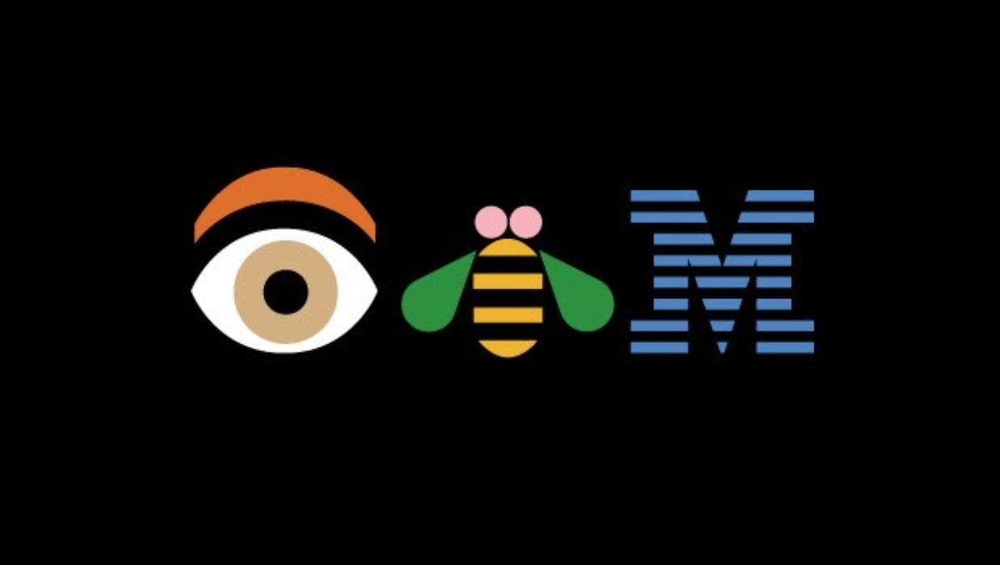
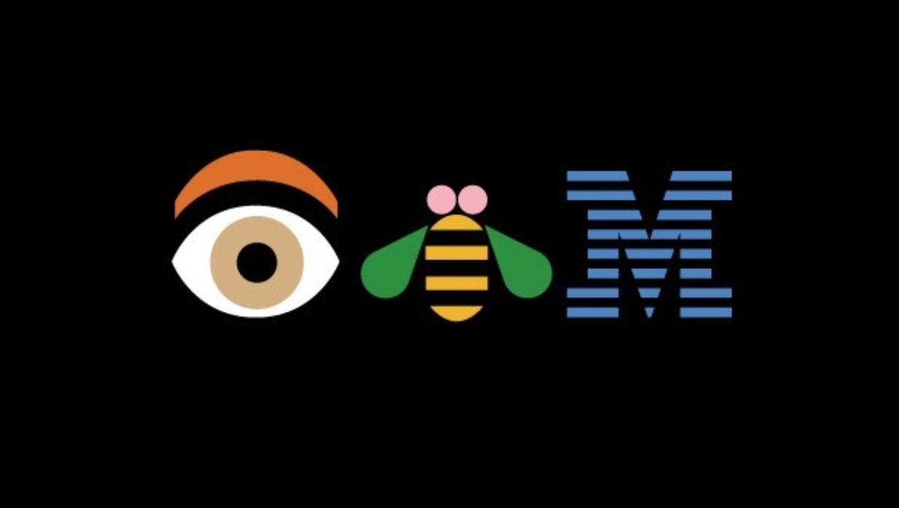

Get To Know Graphic Design
Graphic design is visual communication. Understanding the history of graphic design will help you realize key design trends of the past and how to shape them in the future. Let's dive into the rich history of design.
First, let us begin with defining what graphic design is. The term “graphic design” is broad and is often used to categorize various disciplines of design including digital and web design. But traditional graphic design is print design like posters, book covers, magazine layout, advertisements, package design, as well as logo and branding. Essentially, as a graphic designer, you take visual content like illustrations or photography and combine them with typography to communicate a message. The key is communication.
Historians trace the origins of graphic design to early cave paintings from about 38,000 BC. These early forms of cave paintings were how people communicated from one generation to another. Subjects in these cave paintings mainly featured animals, handprints, weapons, and other references to hunting. While it is unclear what humans were communicating, it is obvious they were communicating visually.

 
